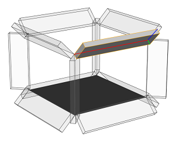

comp
Synopsis
comp(compSelector) { selector operator operations | selector operator operations ... }
Parameters
- compSelector (keyword)
The component into which to split (f for faces, e for edges, v for vertices), - selector (keyword)
Semantic selection keyword:- front, back, left, right, top, bottom: The y-normals of the components are analyzed by classifying their directions into the corresponding quadrants (in relation to the local coordinate system of the current shape).
- object.front, object.back, object.left, object.right, object.top, object.bottom, object.side: The y-normals of the components are analyzed by classifying their directions into the corresponding quadrants (in relation to the object coordinate system of the current initial shape).
- world.south, world.north, world.west, world.east, world.up, world.down, world.side: The y-normals of the components are analyzed by classifying their directions into the corresponding quadrants (in relation to the world coordinate system).
- vertical, horizontal, aslant, nutant:
The y-normals are analyzed in relation to the xz-plane of the current shape's local coordinate
system. The the angle between
normals and xz-plane is used to classify the components as follows:
The exact ranges are (in degrees):- horizontal: ]78.75, 90]
- aslant: ]11.25, 78.75]
- vertical: ]-11.25, 11.25]
- nutant: ]-78.55, -11.25]
- horizontal: [-90, -78.75]
- side: Selects all but the horizontal components
- border, inside: Components at the border of or fully inside the geometry respectively. Border edges are connected to only one face; border faces contain one or more border edges; border vertices are start or end point of one or more border edges.
- eave, hip, valley, ridge: These selectors work on edges only and are designed to be used in conjunction with roofs. See the section below for more details.
- street.front, street.back, street.left, street.right, street.side: If the streetWidth attribute is available on the initial shape, these selectors can be used to identify street-facing components. See the section below for more details.
- all: Selects all components
- index (float): Selects the index-th component (0-based).
- operator
The operator defines how the selected components are used to generate successor shapes. Valid operators are:- : Each selected component is put into a new shape
- = All selected components are combined into one new shape
- operations
A sequence of CGA operations to execute.
The comp operation (component split) allows to divide a shape
into its geometric components, which are either faces, edges or vertices.
The components can be selected using either their index or a set of semantic selection keywords. The selected components
are transformed to a new shape and processed by a sequence of shape operations. Depending on the operator, either one shape is created for each individual selected component (":") ore one shape for the whole set of selected components ("=").
The selection parameters of a component split work in a excluding manner: if a parameter has selected a specific component, this component cannot be part of another selection (from left to right).
The local coordinate systems (pivot and scope) of the newly generated shapes are aligned according to the geometry's topology; the component split is one of the few shape operations which manipulate the pivot of a shape.
In the case of a face component split, the x-axis will be parallel to the first edge of the face and the z-axis wil point along the face's normal. The pivot will be positioned at the first vertex of the first edge of the face; the scope will be the bounding box of the face, i.e.the z-dimension of the emerging shape's scope is set to zero.
In the case of an edge component split, the x-axes of the pivot an the scope are along the edge and the z-axes point along the average of the normals of the neighboring faces. The y- and z-dimension of the scope are set to zero and the x-dimension is the length of the edge. The pivot will be positioned at one of the endpoints of the edge. The indexing of edges is as follows: index 0 is the first edge of the first face, index 2 the second edge of the first face etc. Shared edges are skipped on second encounter.
In case of a vertex component split, the pivot is positioned at the vertex, the z-axes will point along the average of the normals of the neighboring faces and all
scope dimensions are set to zero.
Shape attributes
Each generated shape will have a number of attributes set:
- comp.sel: A string containing the selector which chose the componets for this shape.
- comp.index: The zero-based index of the selected component.
- comp.total: The total number of components selected by the selector.
Index and total are per selector; for instance
...
primitiveCube()
comp(f) { front : Front | side : Side }
will create one Front shape with comp.sel="front", comp.index=0, comp.total=1 and 3 Side shapes with comp.sel="side", comp.index=0,1,2 and comp.total=3.
Trim Planes
Additionally, for faces, the component split generates trim planes. Trim planes are placed along the shared edges of the new face in a bisecting angle. The purpose of trim planes is twofold. On one side, trimming handles geometry intersections on the boundary of two neighboring faces, and on the other side, trimming is used to handle non-rectangular faces.According to the direction of the shared edge, trim planes are classified into horizontal and vertical planes. They can be switched on or off by setting the trim attribute to true or false. By default, trimming is activated for vertical trim planes and deactivated for horizontal trim planes. Check the trim planes examples below.
Trim planes are only generated if the : operator is used!
Roof Edges
There is a number of selectors which are designed to classify typical roof edges:
- eave: Horizontal border edges on the bottom of the roof. The edges are always oriented anti-clockwise around the original face.
- hip: Inside edges connected to at least one eave edge. Hip edges are always oriented upwards, i.e. the ending point has larger y-coordinate than the starting point.
- valley: Inside edges where the two connected faces form a concavity. Valley edges are always oriented upwards, i.e. the ending point has larger y-coordinate than the starting point.
- ridge: Inside edges which are not hip or valley. Ridge edges are always oriented upwards, i.e. the ending point has larger y-coordinate than the starting point.
The figure below shows a few examples.
These selectors can only be applied on edge component splits!
Street Selectors
Components adjacent to a street can be selected with the street.front selector, rear components can be selected with the street.back selector, and components in between front and back can be selected with the street.left and street.right selectors. street.side combines left and right components.These selectors depend on the availability of the streetWidth attribute map; see Auto-generated street width attributes. If the attribute is not available, component selection falls back to the object.xxx selectors.
Related
Examples
Facade Selection / Face Split Details
 |
Let us split the mass model of a building into the main facade and a number of side facades. Note the orientation of the pivot (the annotated axes). |
 |
Building-->
comp(f) {
front : color("#ff0000") Main |
side : color("#0000ff") Side
}
|
 |
Each face is now the geometry of a new shape; the new shapes' scopes and pivots depend on the faces' orientation. The x-axis points along the first edge and the z-axis points along the face normal. The scope's z-dimension is zero. |
Selectors 1: Quadrant-based
Sphere-->
comp(f){
top: color("#0000ff") X |
bottom: color("#ffff00") X |
front: color("#ff0000") X |
back: color("#ff00ff") X |
left: color("#00ffff") X |
right: color("#00ff00") X
}
Selectors are demonstrated by using them to color the faces of a spherical geometry. The selection is relative to the local coordinate system (the shown scope). |
Selectors 2: Angle to y-axis based
Sphere-->
comp(f){
horizontal: color("#0000ff") X |
aslant: color("#ff0000") X |
vertical: color("#ffff00") X |
nutant: color("#ff00ff") X
}
Note the horizontal areas (blue) on the sphere's poles. |
Index-based Selection
 |
A mesh can also be disassembled into its components by addressing them directly by their index. The indexing scheme is inherently encoded in the model itself! |
 |
Tube-->
comp(f) {
0 : X |
2 : X |
4 : X
}
Here, only faces 0, 2 and 4 of the cylinder are selected. |
Trim Planes
Start-->
s(10,10,10)
primitiveCube()
comp(f) {5 : X}
At shared edges, trim planes (green) are inserted. |
|
X--> s(15,'1, 2) center(xyz) primitiveCube()Inserted geometry is cut with the trim planes. |
|
 |
Start-->
s(10,10,10)
primitiveCube()
set(trim.horizontal, true)
comp(f) {5 : X}
By default, horizontal trim planes are off. Enabling them before inserting the geometry gives a different result. |
The Operator
 |
Lot-->
extrude(20)
comp(f) { side : Sides }
Using the ":" operator results in a new shape for each component selected by the selector. |
 |
Lot-->
extrude(20)
comp(f) { side = Sides }
In contrast, using the "=" operator results in exactly one new shape for all component selected by the selector. |
Border and Inside Selectors
 |
The picture on the left shows the initial shape. It is a subdivided plane, consisting of a number of faces. |
 |
Init-->
comp(f) { border : FBorder | inside : FInside }
BorderF-->
color("#ff0000")
InsideF-->
color("#00ff00")
The example selects the border and inside faces and colors them. |
 |
Init-->
comp(e) { border : EBorder | inside : EInside }
EBorder--> s('1, 0.05, 0.05) t(0, '-0.5, 0)
color("#ff0000") primitiveCube()
EInside--> s('1, 0.01, 0.01) t(0, '-0.5, 0)
color("#00ff00") primitiveCube()
Here, there border and inside edges are selected and colored cubes are inserted. |
 |
Init-->
comp(v) { border : VBorder | inside : VInside }
VBorder--> s(0.05, 0.05, 0.05) t(-0.025, -0.025, -0.025)
color("#ff0000") primitiveCube()
VInside--> s(0.05, 0.05, 0.05) t(-0.025, -0.025, -0.025)
color("#00ff00") primitiveCube()
Finally, the border and inside vertices are used to insert colored cubes. |
Edge Split Details
 |
Lot-->
extrude(10)
comp(e) { all : primitiveCube()
s('1, 0.8, 0.8) X }
A building mass model is split into its edges, and the built-in cube model is inserted into
each edge shape. |
Vertex Split Details
Lot-->
extrude(10)
MassModel
comp(v) { all : VShapes }
A building mass model is split into its vertices. |
Copyright ©2008-2016 Esri R&D Center Zurich. All rights reserved.